豆の情報から焙煎度、抽出方法、味わいの記録、カフェの思い出まで。すべてを一つにまとめて、あなただけのコーヒーノートに。
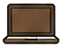
ブラウザ保存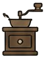
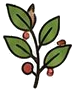
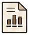
記録のサマリーをひと目で把握。
抽出レシピや味わいを詳しく記録。
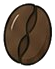
豆の情報や焙煎度をまとめて管理。
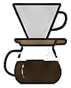
お気に入りの器具をリスト化。
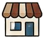
訪れたカフェの記録やメモを残せる。
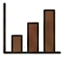
様々な切り口でデータを可視化。
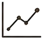
あなたの好みや傾向を見つける。
好みに合う豆やカフェをレコメンド。
豆や焙煎度、抽出方法、味わい、メモなどをサッと記録します。
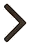
記録が自動でグラフ化。あなたのコーヒー体験をデータで振り返ります。
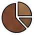
好みの傾向を知り、お気に入りの一杯やカフェに出会えます。
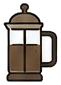
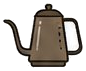
日々の記録が、あなたのコーヒーを確実にアップデートします。
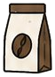
好みの傾向を知れば、次に選ぶ豆がきっとわかります。
訪れたカフェのお気に入りや気づきを残して楽しめます。
シンプルで続けやすいから、無理なく記録を続けられます。
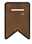
データは端末内に保存安心・安全